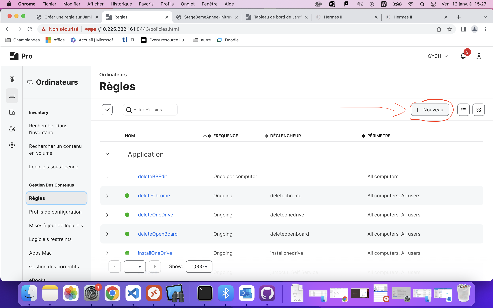

Créer une règle sur Jamf#
Pour créer une règle sur jamf, il faut se connecter au dashboard (https://10.225.232.161:8443/) avec vos identifiants admin (ou avec le compte gychameta - même mot de passe qu’adminl)
{kind=link}
{kind=link}
Ensuite il faut aller sur Ordinateurs > Règles
{kind=link}
Et la vous verrez toutes les règles jamf du gymnase. Après il faut cliquer sur “Nouveau”
{kind=link}
Vous arriverez sur cette page: Vous pouvez mettre un nom à la règle, y lier un paquet d’application (.pkg), lier un script (voir jamf admin), etc.. Je vous conseille de fouiller par vous même comme ça vous verrez tout ce que vous pouvez faire avec une règle jamf.

Déclencheurs jamf#
En scrollant vers le bas, vous verrez la liste des déclencheurs que vous pouvez utiliser dans votre règle. Ce sont des conditions qui détermineront le moment ou votre règle s’éxécutera.
{kind=link}
Démarrage#
Lance la règle au démarrage de l’ordinateur
Ouverture de session#
Lance la règle dés qu’une session est ouverte
Changement d’état du réseau#
voir explication jamf (on ne s’en sert jamais)
Inscription terminée#
Très peu utilisé aussi, sert à éxecuter la règle dés que l’enrôlement du poste s’est fini
Check-in récurrent#
Check qui vérifie env. toutes les 10 mins si la règle doit être lancée. Très utile selon les cas de figure, pour être sûr qu’une règle se déploie.
Personnalisé#
Sert à définir un nom personnalisé à la règle que vous puissez l’éxécuter avec le terminal ou dans les scripts jamf.
{kind=link}
Fréquence d’éxécution#
Ensuite nous avons la fréquence d’éxécution de la règle:
{kind=link}
Vous avez le choix entre:#
Once per computer - Une fois par poste#
Once per user per computer - Une fois par utilisateur de chaque poste#
Once per user - Une fois par utilisateur#
Once every day/week/month - Une fois par jour, par semaine, par mois#
Ongoing - La règle peut se lancer à l’infini, par le terminal ou automatiquement toutes les 10 minutes si vous cochez le “Check-in récurrent”.#

Paquets#
La section paquets vous sera utile si vous voulez lier un .pkg à votre règle. (très souvent pour installer une application )

Pour ajouter un paquet dans la liste des paquets jamf admin, il faut juste cliquer sur “Configure”.
Ajouter un paquet dans la liste#
Ajouter un paquet à la règle#
Pour ajouter un paquet de la liste à votre règle, il faut le chercher avec “CTRL + F” puis cliquer sur “ajouter”.
{kind=link}
Scripts#
Les scripts servent à lancer des commandes du terminal depuis la règle que vous avez créé.
Créer un script#
Pour créer un script, il faut se rendre sur Jamf Admin (même lien que pour se connecter à jamf pro) et se logger avec le compte jamfupload qui se trouve sur DGEP Passwords .
Pour avoir accès aux deux jamf en même temps, je vous conseille d’ouvrir jamf admin en navigation privée.
{kind=link}
Vous arriverez sur le dashboard de jamf admin (il est similaire à celui de jamf pro)
Ensuite, il faut aller dans Réglages > Gestion des ordinateurs et dans Scripts.
{kind=link}
Créer et configurer son script#
Vous arriverez sur la liste des scripts des gymnases et écoles professionnelles. Pour en créer un nouveau, il faut cliquer sur (+) Nouveau en haut à droite:
{kind=link}
Après, il faudra mettre un nom au script (doit commencer par GYCH_ si c’est que pour notre gymnase ou par ALL_ si ça peut être utile à tout le monde!), une catégorie..
Dans la section Script, c’est là que vous allez entrer vos commandes terminal/bash. Vous pouvez programmer en Shell/Bash, Python et perl.
{kind=link}
Quand votre script est créé, vous pouvez retourner sur Jamf Pro, faire un refresh et sélectionner le script que vous venez de créer:
{kind=link}
Votre page devrait ressembler à ça dés que votre script est ajouté à votre règle:
{kind=link}
Périmètre#
La section périmètre permet de définir le périmètre d’éxécution de votre règle jamf. Vous pouvez définir des postes précis, un groupe de postes… Vous pouvez aussi exclure des postes de votre règle, dans le cas ou vous n’aimeriez pas que l’éxécution de votre règle soit possible partout.
Définir le périmètre sur “tous les ordinateurs” du gymnase#
Vous devez juste sélectionner “All computers in GYCH” sous l’option Ordinateurs Cibles.
Définir un ou plusieurs ordinateurs en périmètre#
Il faut cliquer sur (+) Ajouter sous “Cible de déploiement sélectionnées”, ce qui vous mènera à un menu avec une liste qui contient tous les ordinateurs enrôlés du gymnase. Vous pouvez aussi ajouter des groupes d’ordinateurs comme cibles de déploiement si c’est ce que vous souhaitez.
{kind=link}